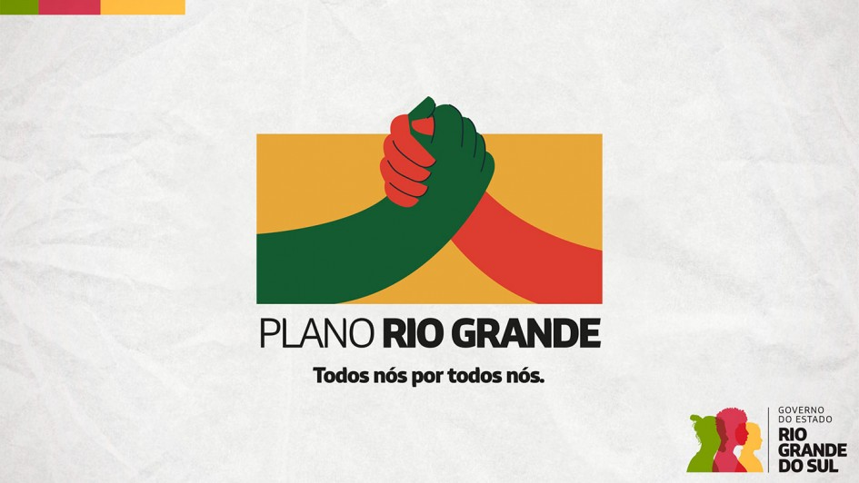

Últimas Noticias

Plano Rio Grande ultrapassa R$ 2 bilhões em investimentos pós-enchente
O governo do Estado já investiu mais de R$ 2 bilhões em
ações para mitigar os efeitos da enchente histórica que
assolou o Rio Grande do Sul, em maio deste ano. O balanço
do Executivo estadual inclui entregas e projetos que integram
o Plano Rio Grande, em áreas como Defesa Civil, Desenvolvimento S
ocial, Habitação, Saúde, Educação e Meio Ambiente, entre outros.
O montante contabilizado se refere apenas a valores investidos
pela gestão estadual.
O Plano Rio Grande, que foi lançado ainda em maio, é o programa de reconstrução,
adaptação e resiliência climática, que propõe uma série de medidas para atenuar os
impactos causados pelas chuvas. A atuação ocorre em: ações emergenciais, que são co
nsideradas de curto prazo; ações de reconstrução, de médio prazo; e Rio Grande do Sul do futuro, de longo prazo.
Para acompanhar a execução do programa do governo, foi criada a Secretaria da Reconstrução Gaúcha (Serg), que tem
como missão acelerar e organizar os processos e projetos de retomada. “A secretaria atua de forma transversal e
dialoga com os demais poderes e setores da sociedade civil, engajados na reconstrução...

Doação de sangue: qual a importância e quem pode doar
A doação de sangue é um ato nobre e solidário que desempenha um
papel vital na saúde e na sobrevivência de inúmeras pessoas. Por
meio da doação, os bancos de sangue podem fornecer transfusões
sanguíneas a pacientes que enfrentam condições médicas graves
ou submetidos a cirurgias complexas...
Fome no Brasil
A fome no Brasil é um problema histórico que, após uma queda considerável, voltou a crescer nos últimos anos e afeta hoje uma parcela de 15,5% da população do país. Convivem com escassez de alimentos 33 milhões de pessoas no território nacional, especialmente nas áreas rurais e nas regiões Norte e Nordeste...
.png)